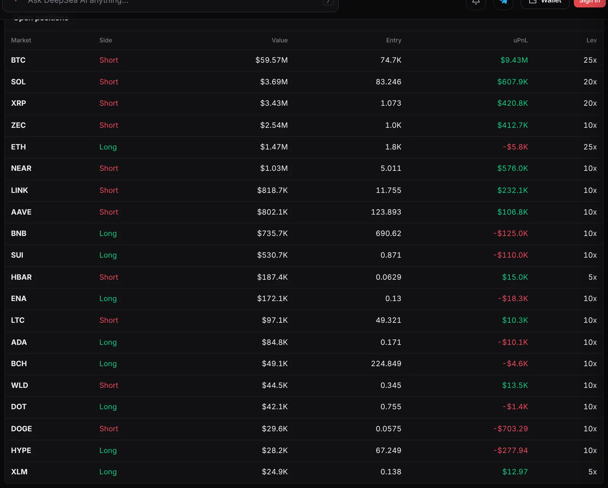

Trader 'John Wick' made $13.1 million in a week and is short $59.8 million of bitcoin
DeepSea ranks the Hyperliquid trader No. 5 on its 7-day smart money board. The bitcoin short, opened near $74,700, shows a $9.3 million paper gain, while most big traders DeepSea tracks are long.
Key points
- DeepSea shows the Hyperliquid wallet labeled John Wick up $13.11 million in 7 days and $28.23 million in 30 days, with $44.37 million in total assets.
- Its largest open position is a $59.79 million bitcoin short at 25x leverage, entered near $74,700, with a $9.30 million paper profit.
- That one short equals about a third of the $172.48 million in bitcoin shorts on DeepSea's long/short board, where big traders are 3.94 to 1 long.
 What DeepSea's data shows
What DeepSea's data shows
DeepSea's smart money board ranks profitable wallets. At 6:39 a.m. ET on Monday, No. 5 over seven days was a Hyperliquid perpetual futures trader labeled John Wick (perpetual futures are bets with no expiry date). Its wallet page shows +$13.11 million in 7 days, +$28.23 million in 30 days and +$34.78 million in 180 days, on $2.10 billion of 30-day volume. Total assets: $44.37 million.
DeepSea lists 20 open positions: 11 shorts (bets on a fall) and 9 longs. The shorts dwarf the rest.
- Bitcoin short: $59.79 million, 25x leverage, entry near $74,700, paper profit $9.30 million
- Solana short: $3.69 million, paper profit $605,800
- XRP short: $3.42 million, paper profit $421,200
- Zcash short: $2.55 million, paper profit $400,700
- NEAR short: $1.02 million, paper profit $582,600
- Largest long: ether, $1.47 million, paper loss $5,800
The latest trades on the page were small: repeated sells of 25 HYPE, about $1,700 each, minutes before our check.

Data: DeepSea (desea.io), checked November 16, 2026, 6:39 a.m. ET.
Betting against the crowd
New to the tools? Read what DeepSea is.
Most big traders DeepSea follows are betting the other way. Its long/short board showed $679.40 million of bitcoin longs against $172.48 million of shorts, a 3.94 to 1 long bias. John Wick's single bitcoin short equals about 35% of that short side, assuming the board counts this wallet.
The bet has paid because bitcoin kept falling. CoinGecko put bitcoin at $64,592 at about 6:40 a.m. ET, down 1.4% in a day and about 13% in a week.
Checking the numbers
We tested DeepSea's figures against CoinGecko's Hyperliquid market data, read at 6:45 a.m. ET. Hyperliquid's bitcoin contract traded at $64,670, about 13.4% below the short's entry. At that price a short entered at $74,700 should show a paper gain of about 15.5% of its current value. DeepSea's $9.30 million on $59.79 million is 15.6%, a match within rounding.
CoinGecko also listed $1.17 billion of open bitcoin bets on Hyperliquid. This one short is about 5% of that. We could not open a Hyperliquid block explorer during this run, so the position itself is confirmed only by DeepSea.
John Wick's largest open shorts
US$ million
Source: DeepSea, 6:39 a.m. ET, November 16, 2026

LC Insight analysis
This section is our reading of the facts above, not a statement of fact.
- We think the profit is largely unrealized: a $9.30 million paper gain can shrink fast at 25x leverage if bitcoin bounces.
- One wallet this size can tilt the picture of what smart money is doing; the board's long bias and this short both deserve weight.
- We cannot tell whether the short hedges holdings elsewhere. DeepSea shows only this Hyperliquid wallet.
What's next
- Whether the bitcoin short is cut or added to
- Bitcoin's move back toward the $74,700 entry
- Changes in DeepSea's 3.94 to 1 long bias on bitcoin
Disclaimer. This article is based on public information and the sources listed below as of the update time shown. It is for information only and is not investment, legal or tax advice. Figures may change as companies and authorities publish new data.
Sources
- DeepSea, trader page John Wick, Hyperliquid (read November 16, 2026, 6:39 a.m. ET)
- DeepSea, smart money 7-day board (read November 16, 2026, 6:39 a.m. ET)
- DeepSea, dashboard long/short board (read November 16, 2026, 6:36 a.m. ET)
- CoinGecko, Hyperliquid (Futures) market data (read November 16, 2026, 6:45 a.m. ET)
- CoinGecko, Bitcoin price (read November 16, 2026, 6:40 a.m. ET)